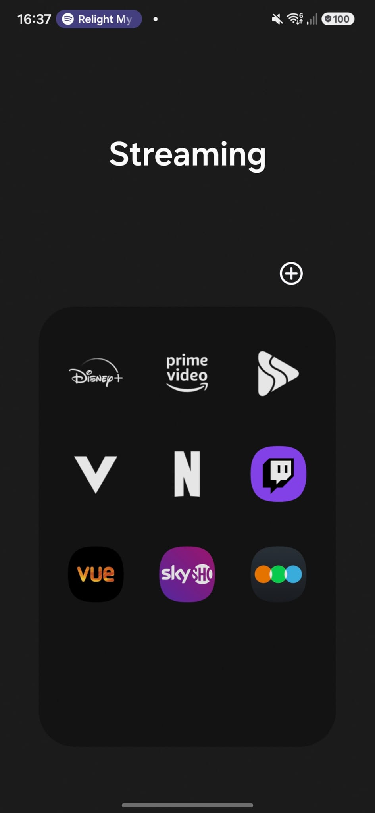

Sinds de komst van het internet is de manier waarop we films ontdekken en bekijken sterk veranderd. Vroeger kwamen we vooral via televisie, reclames en bioscooptrailers in aanraking met nieuwe films. Tegenwoordig spelen websites, sociale media en streamingdiensten een grote rol. We kunnen op elk moment informatie over films opzoeken, trailers bekijken en ervaringen delen met andere kijkers. Hierdoor is het makkelijker geworden om nieuwe films te ontdekken, maar zijn we ook veel meer met films bezig voordat we ze daadwerkelijk bekijken.
Op het internet zijn ook veel gemeenschappen ontstaan waarin filmliefhebbers hun interesse kunnen delen. Op websites, forums en sociale media kunnen we discussiëren over films, theorieën bedenken en recensies schrijven. Ook kunnen we in contact komen met mensen die dezelfde films interessant vinden. Dit maakt het makkelijker om nieuwe perspectieven te ontdekken en films beter te begrijpen. Tegelijkertijd worden we hierdoor soms beïnvloed door de meningen en verwachtingen van andere kijkers, waardoor onze eigen filmervaring kan veranderen.


